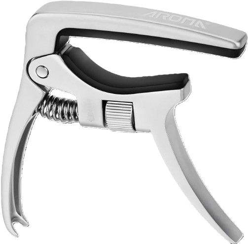

"Amad a vuestros enemigos, ¡Vengo pronto!, el cantor hace un servicio que lo ayuda a Él y a toda la comunidad, es un servicio de humildad sencillez y alabanza..."
close
Ciclo:
Tiempo:
Etapas del Camino
Filtros de los Cantos
music_noteLa

5/ 5º traste
edit_note Nota del Cantor
Escribe aquí tus anotaciones técnicas, cejillas opcionales o recordatorios para este canto:
Transportar Acorde
Variación:
Acorde Canto
La m
Cejilla Canto
Sin cejilla
Acorde Cantor
La m
Cejilla Cantor
Digitación del acorde:
auto_stories
Título del Canto
Cita Bíblica
edit_note
Formulario de Catequesis
Completa la información teológica y bíblica del canto